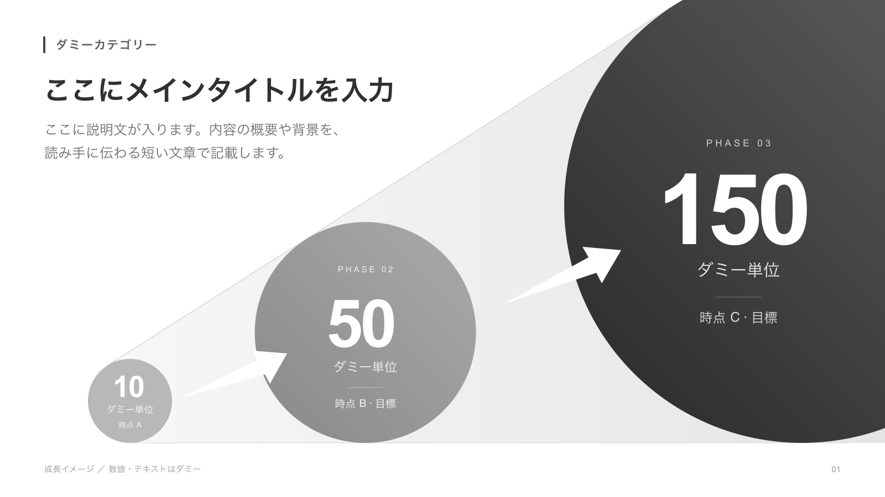成長を示す円成長3要素 · 要素3段階の規模変化を主役の数値で伝えるSVGPNG使い方・採用理由円の面積は数値に比例していない。定量比較では面積を計算し直すか別のグラフを使う。右端の大きな円を裁ち落とす構図。顧客の固定ロゴ領域と衝突する場合は調整する。
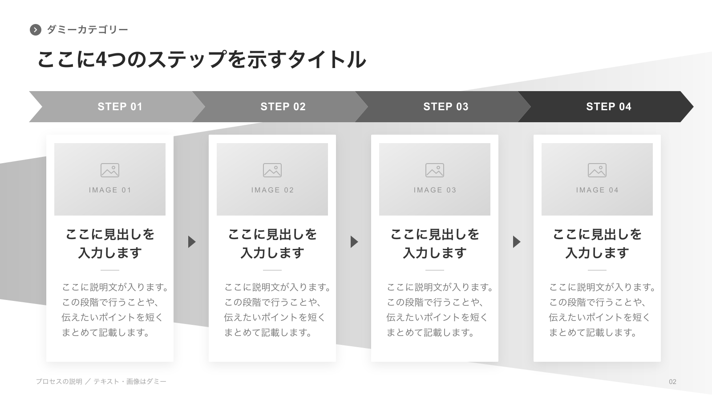4段階の説明カード手順・業務4要素 · 要素順序のある4段階を、見出し・画像・説明文で示すSVGPNG使い方・採用理由画像枠はダミー。案件の写真や適切な図に差し替える。長文を押し込まず、カード数の変更時は幅と文字量を再設計する。
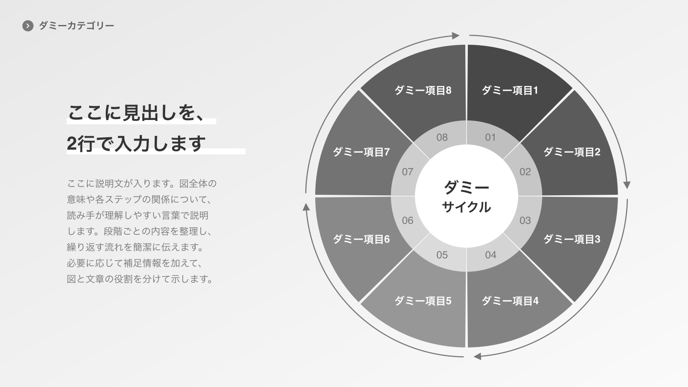8段階の循環図循環8要素 · 要素8段階が繰り返される流れを説明するSVGPNG使い方・採用理由原稿に循環の根拠がある場合に選ぶ。一方向の手順を循環に変えない。各区画は短いラベル用。詳細な説明は図の外へ置く。
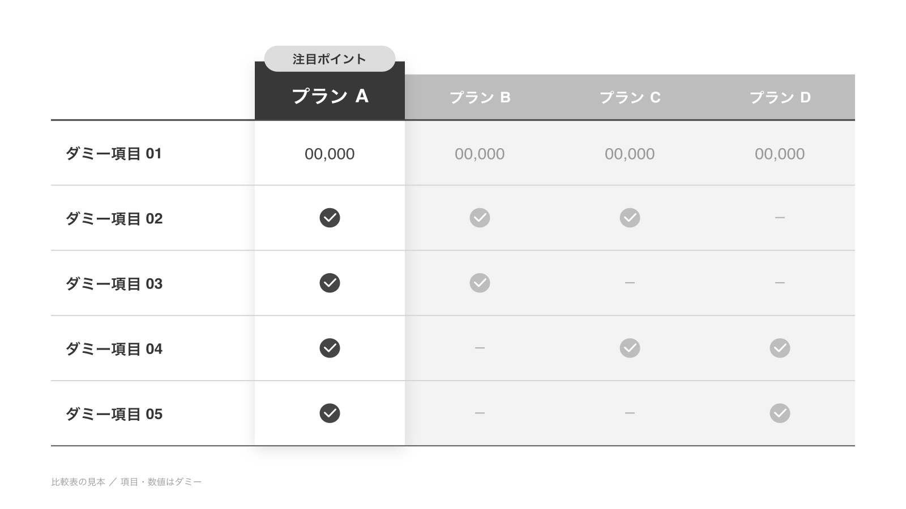強調列のある比較表比較4要素 · 要素4つの選択肢を5項目で比較し、1列を強調するSVGPNG使い方・採用理由比較条件を揃える。チェック・数値・推奨の根拠を原稿から確認する。強調列は利用者の目的に合わせて選び、原稿にない優位性を追加しない。
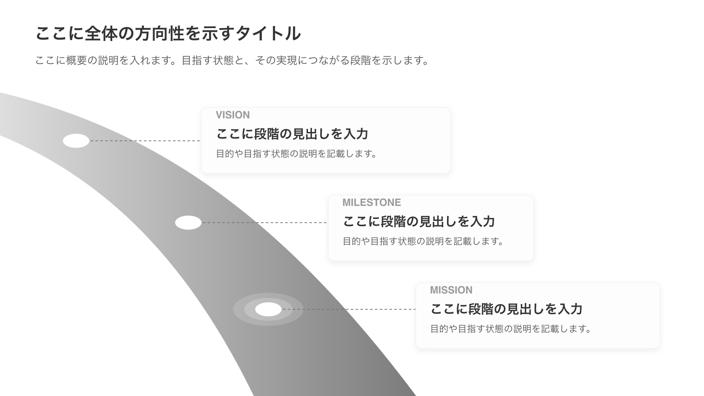道筋と説明カードビジョン3要素 · milestones目指す状態と、その実現につながる3つの段階を示すSVGPNG使い方・採用理由曲線は概念の道筋。時間軸や増減のグラフとして読ませない。ブランドの色・書体・固定領域を優先し、ダミー文言を正式原稿に差し替える。
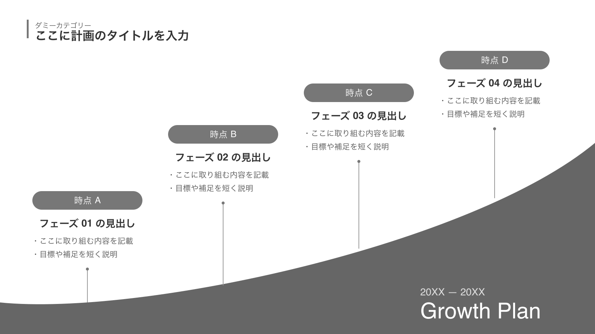成長曲線の計画ロードマップ4要素 · milestones4つの時点と実行内容を成長イメージに沿って配置するSVGPNG使い方・採用理由曲線は成長イメージであり予測値ではない。実数値の推移には目盛りのあるグラフを使う。ブランドの色・書体・固定領域を優先し、ダミー文言を正式原稿に差し替える。
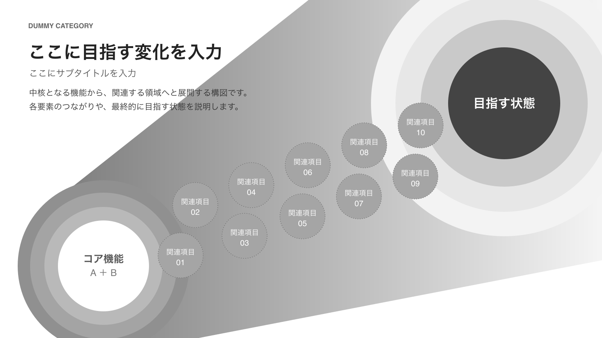コアから領域を広げる構図領域拡張10要素 · related_itemsコア機能から関連領域を広げて目指す状態へつなげるSVGPNG使い方・採用理由10は中間の関連項目数。コアと到達点は別。円の並びは厳密な順番・依存関係を示さず、原稿の関係を確認する。ブランドの色・書体・固定領域を優先し、ダミー文言を正式原稿に差し替える。
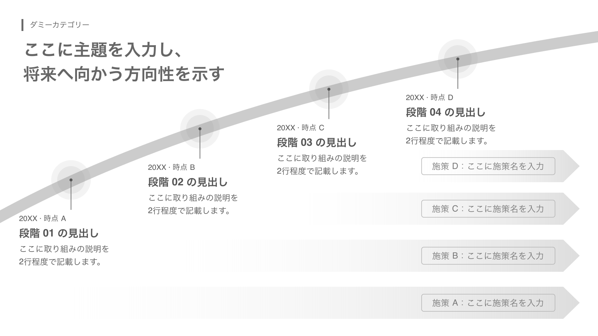複数施策のロードマップロードマップ4要素 · milestones4つの時点と並行する4つの施策をまとめるSVGPNG使い方・採用理由要素数は時点数。施策の開始位置・期間・関係は原稿に合わせる。上昇線は定量的な成長率を示さない。ブランドの色・書体・固定領域を優先し、ダミー文言を正式原稿に差し替える。
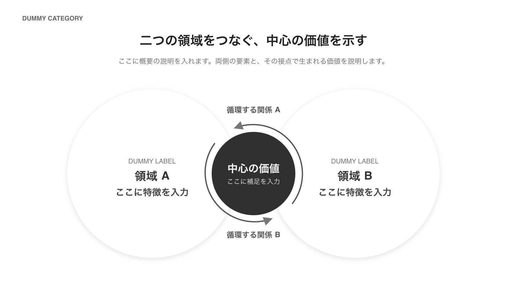二領域の接点と循環関係2要素 · domains二つの領域の接点で生まれる価値と循環を示すSVGPNG使い方・採用理由円の面積は数量を表さない。循環の向きと意味を原稿で確認する。ブランドの色・書体・固定領域を優先し、ダミー文言を正式原稿に差し替える。
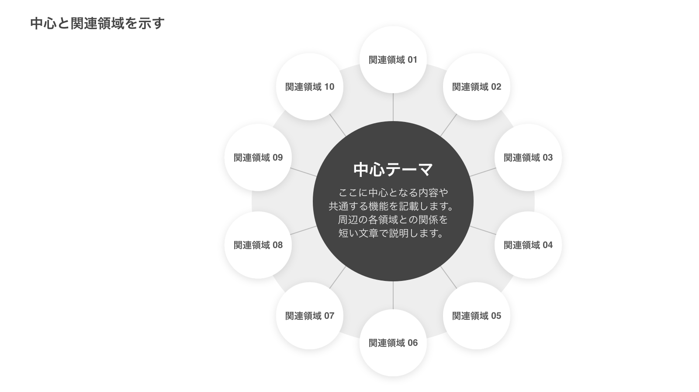中心と10の関連領域関係10要素 · satellites共通の中心テーマと10の周辺領域の関係を示すSVGPNG使い方・採用理由要素数は中心を除く周辺領域数。接続線は順番や指揮命令を意味しない。ブランドの色・書体・固定領域を優先し、ダミー文言を正式原稿に差し替える。
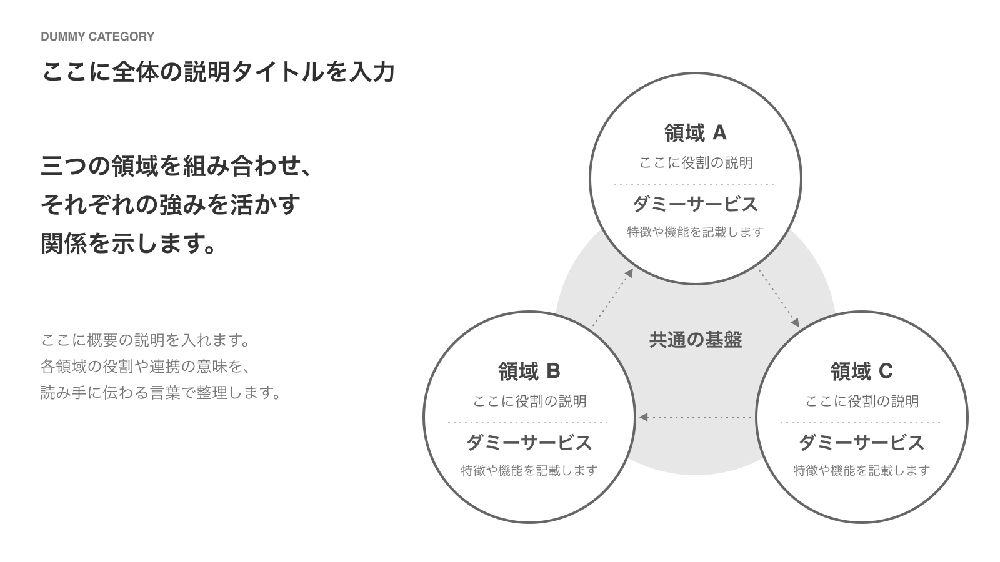三領域の事業連携関係3要素 · domains三事業の役割と共通基盤、相互の連携を説明するSVGPNG使い方・採用理由矢印の向きや連携の内容は原稿に合わせる。相乗効果を推測で追加しない。ブランドの色・書体・固定領域を優先し、ダミー文言を正式原稿に差し替える。
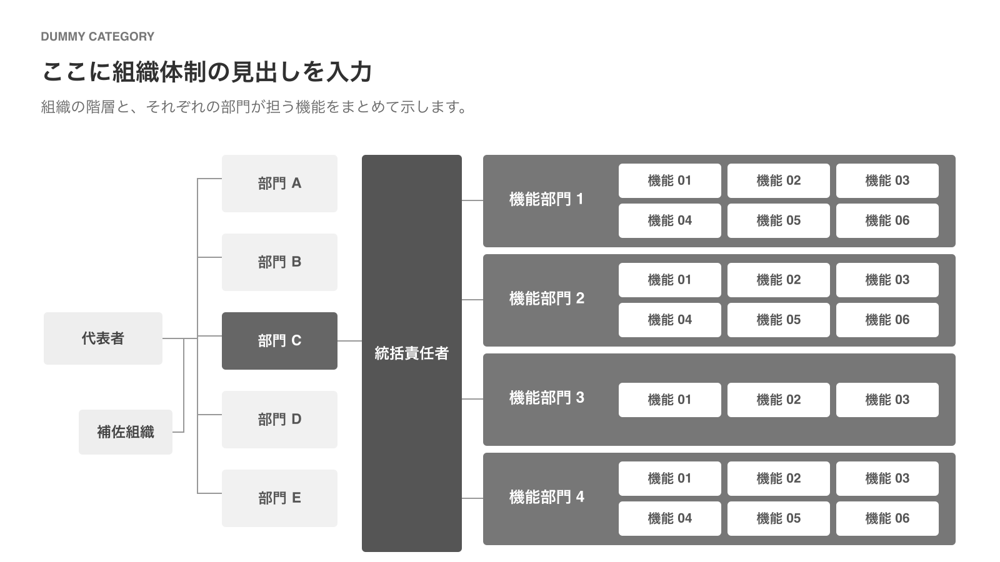部門階層と機能の一覧組織4要素 · functional_groups部門の階層と4つの機能部門の担当領域を一覧にするSVGPNG使い方・採用理由要素数は右側の機能部門数。組織の指揮命令と製品の機能区分を混同しない。ブランドの色・書体・固定領域を優先し、ダミー文言を正式原稿に差し替える。
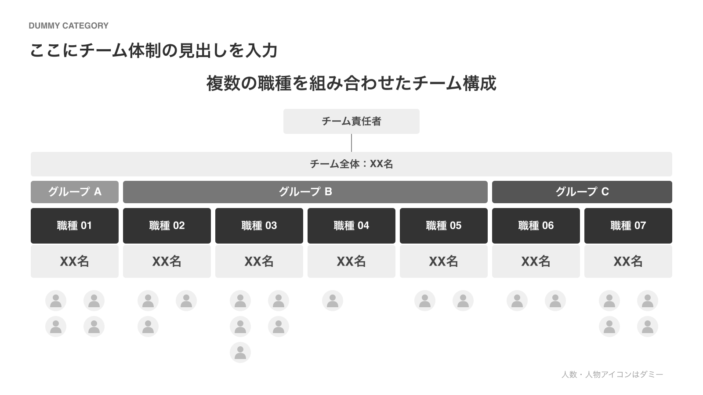職種別チーム構成組織7要素 · roles7職種の役割と人数をグループ別に示すSVGPNG使い方・採用理由人数と合計を一致させる。人物アイコンの数はダミーであり実人数ではない。ブランドの色・書体・固定領域を優先し、ダミー文言を正式原稿に差し替える。
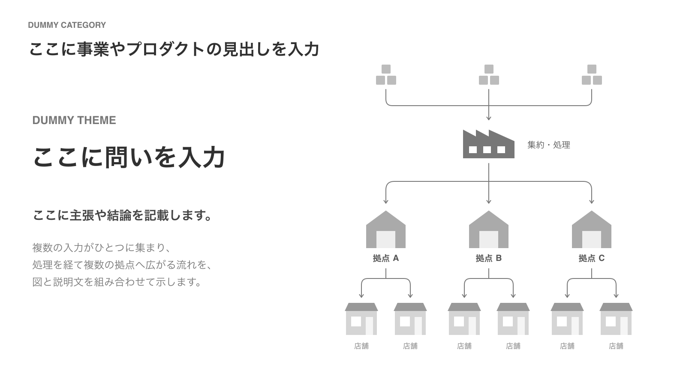集約と分岐の流通フロー集約・分岐4要素 · layers入力・処理・拠点・店舗の4層で集約と分岐を示すSVGPNG使い方・採用理由要素数は層数であり拠点数ではない。矢印が物・情報・金銭のどれを表すか明記する。ブランドの色・書体・固定領域を優先し、ダミー文言を正式原稿に差し替える。
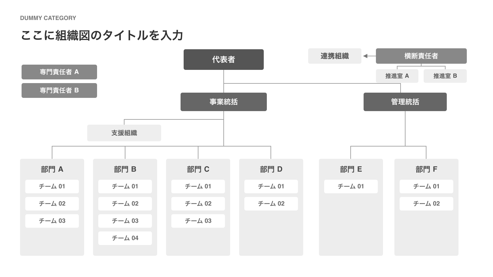階層と部門別チーム組織6要素 · departments6部門の階層と各部門のチームを示すSVGPNG使い方・採用理由要素数は末端の部門数。補佐・連携・指揮命令の接続を区別し、実際の関係に合わせる。ブランドの色・書体・固定領域を優先し、ダミー文言を正式原稿に差し替える。
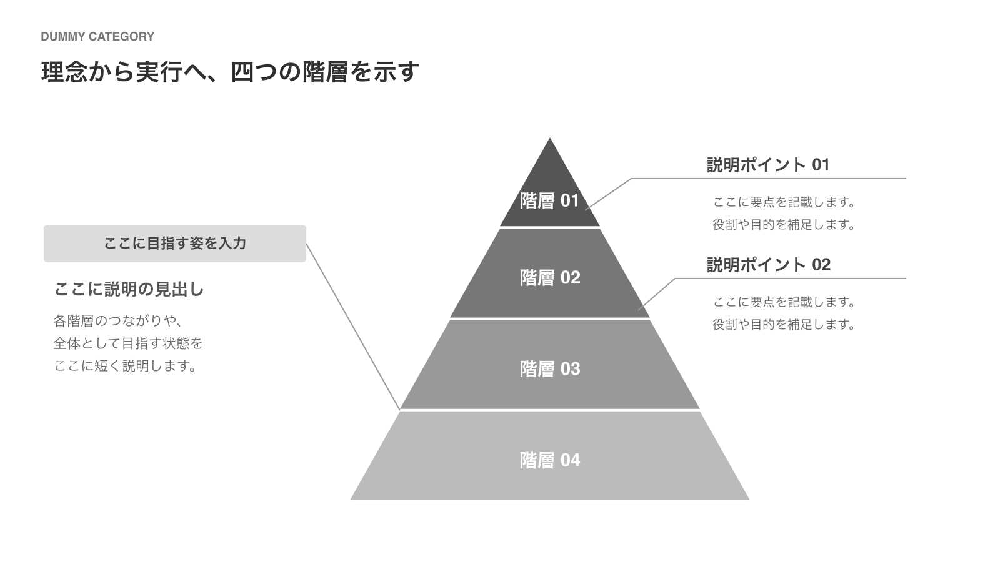四層ピラミッドと両側の解説理念の階層4要素 · layers理念から計画への四階層と全体の目指す姿を示すSVGPNG使い方・採用理由要素数は階層・段数。幅や面積は数量や優劣を示さない。上下関係は原稿で確認する。ブランドの色・書体・固定領域を優先し、ダミー文言を正式原稿に差し替える。
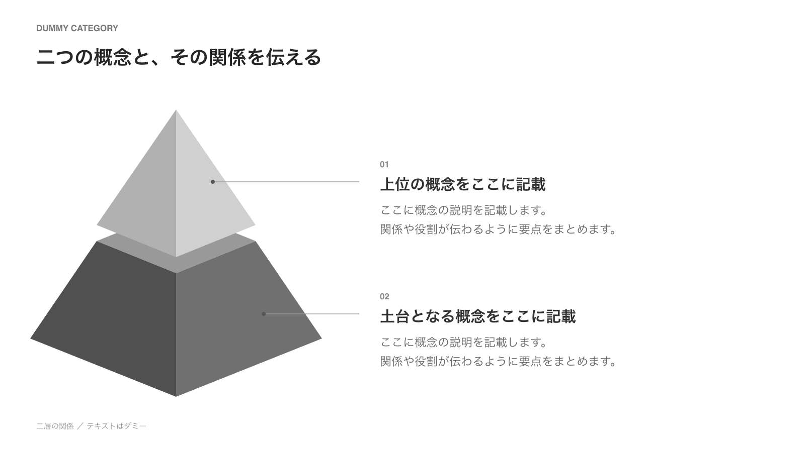二段の立体ピラミッド理念の階層2要素 · layers二つの概念の上下関係を立体的に示し右側で説明するSVGPNG使い方・採用理由要素数は階層・段数。幅や面積は数量や優劣を示さない。上下関係は原稿で確認する。ブランドの色・書体・固定領域を優先し、ダミー文言を正式原稿に差し替える。
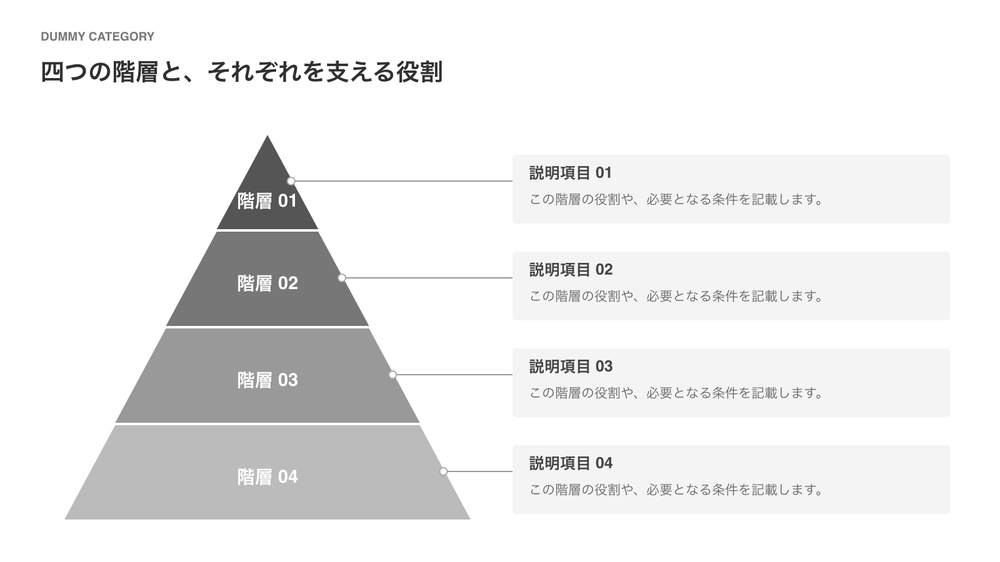四層と説明カード理念の階層4要素 · layers各階層の役割や成立条件を対応するカードで説明するSVGPNG使い方・採用理由要素数は階層・段数。幅や面積は数量や優劣を示さない。上下関係は原稿で確認する。ブランドの色・書体・固定領域を優先し、ダミー文言を正式原稿に差し替える。
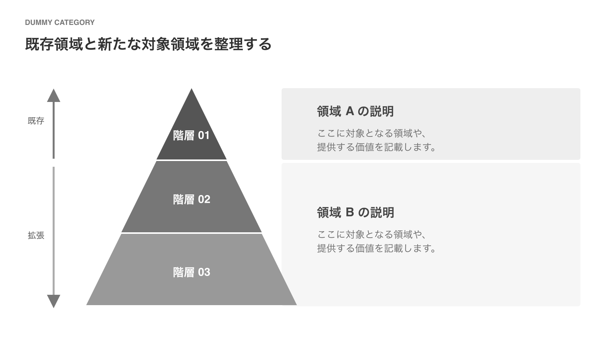三層と二つの対象領域理念の階層3要素 · layers三階層の対象を既存領域と拡張領域に分けて示すSVGPNG使い方・採用理由要素数は階層・段数。幅や面積は数量や優劣を示さない。上下関係は原稿で確認する。ブランドの色・書体・固定領域を優先し、ダミー文言を正式原稿に差し替える。
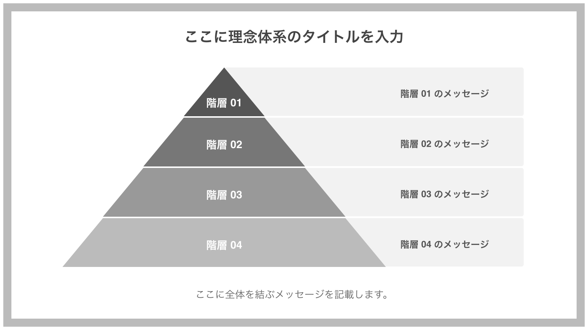理念体系と対応メッセージ理念の階層4要素 · layers四つの理念階層と各層のメッセージを行単位で対応させるSVGPNG使い方・採用理由要素数は階層・段数。幅や面積は数量や優劣を示さない。上下関係は原稿で確認する。ブランドの色・書体・固定領域を優先し、ダミー文言を正式原稿に差し替える。
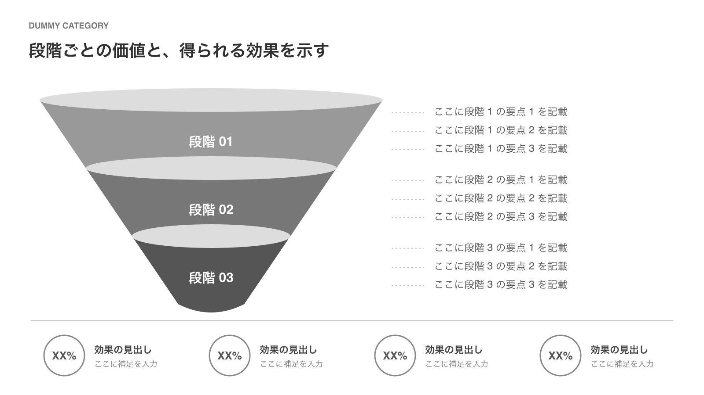三段ファネルと効果指標逆円錐3要素 · layers三段階の価値と右側の要点、下段の四つの効果指標を示すSVGPNG使い方・採用理由要素数は階層・段数。幅や面積は数量や優劣を示さない。上下関係は原稿で確認する。ブランドの色・書体・固定領域を優先し、ダミー文言を正式原稿に差し替える。逆円錐は構図の参考。脱落率や絞り込みを表すとは限らず、各段の関係を明示する。4指標は段数に含めない。割合・指標名・根拠を実データに差し替える。
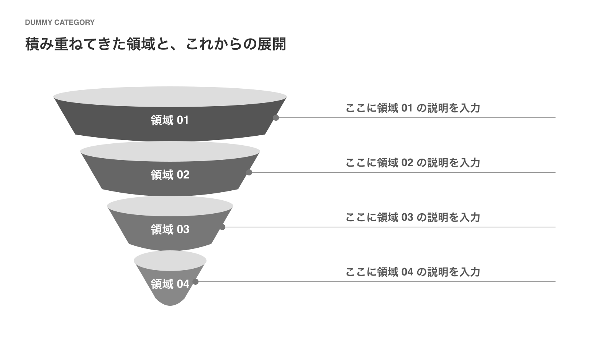四段の領域拡張逆円錐4要素 · layers四つの事業領域を分離した逆円錐と引き出し線で説明するSVGPNG使い方・採用理由要素数は階層・段数。幅や面積は数量や優劣を示さない。上下関係は原稿で確認する。ブランドの色・書体・固定領域を優先し、ダミー文言を正式原稿に差し替える。逆円錐は構図の参考。脱落率や絞り込みを表すとは限らず、各段の関係を明示する。
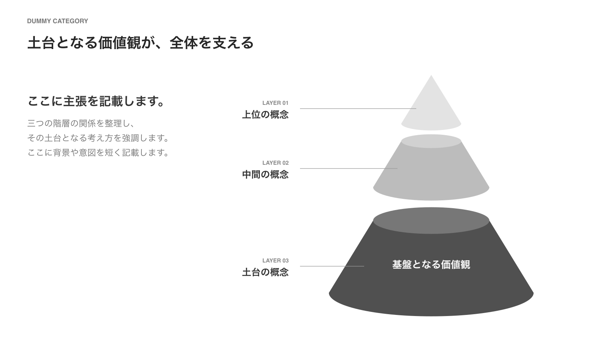三層の理念と土台の強調理念の階層3要素 · layers三階層のうち土台の価値観を大きく強調するSVGPNG使い方・採用理由断面は同じ比率の楕円で統一する。各層の間隔と外側ラベルの余白を保つ。
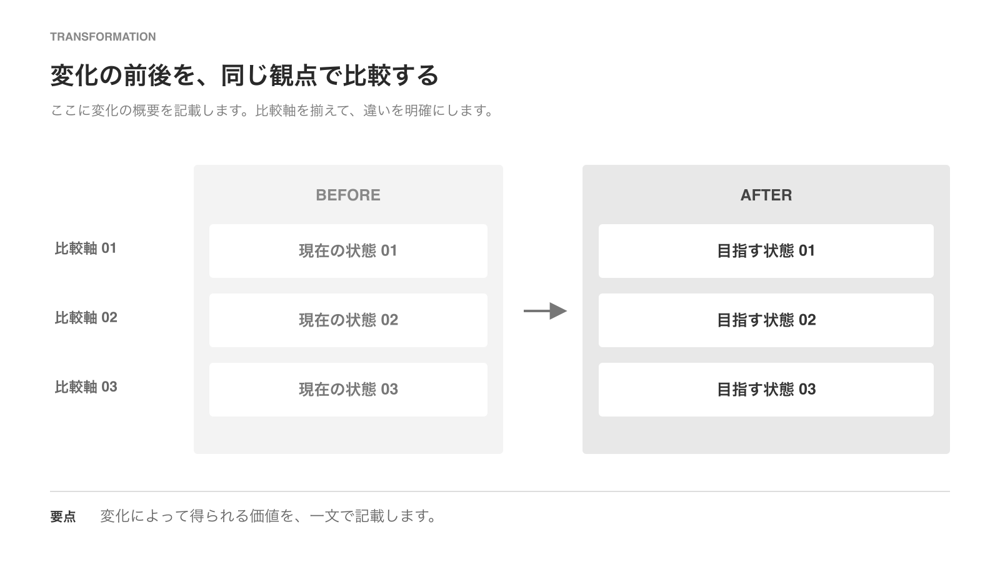三項目で比較するビフォーアフター比較2要素 · alternatives同じ三つの観点で現在と目指す状態を対比するSVGPNG使い方・採用理由要素数2は比較案の数。比較軸3行とは別。前後で同じ観点を対応させる。色・書体は顧客キットに合わせ、ダミー文言を正式原稿に差し替える。 比較軸と行が揃い、視線が横方向に自然に移る。
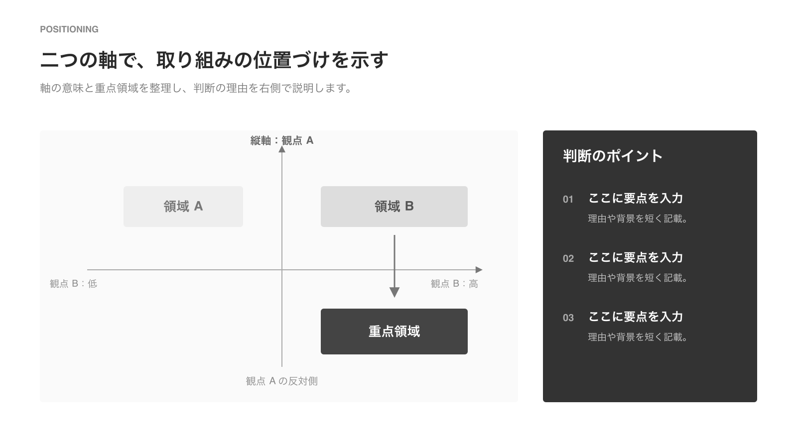二軸の位置づけと重点領域マトリクス2要素 · axes二軸上の位置と重点領域を示し、横に判断理由を置くSVGPNG使い方・採用理由要素数2は軸数。軸の意味・向き・領域間の移動は原稿で確認する。座標は定量値ではない。色・書体は顧客キットに合わせ、ダミー文言を正式原稿に差し替える。 軸・領域・補足説明が分かれ、重点が一つに絞られている。
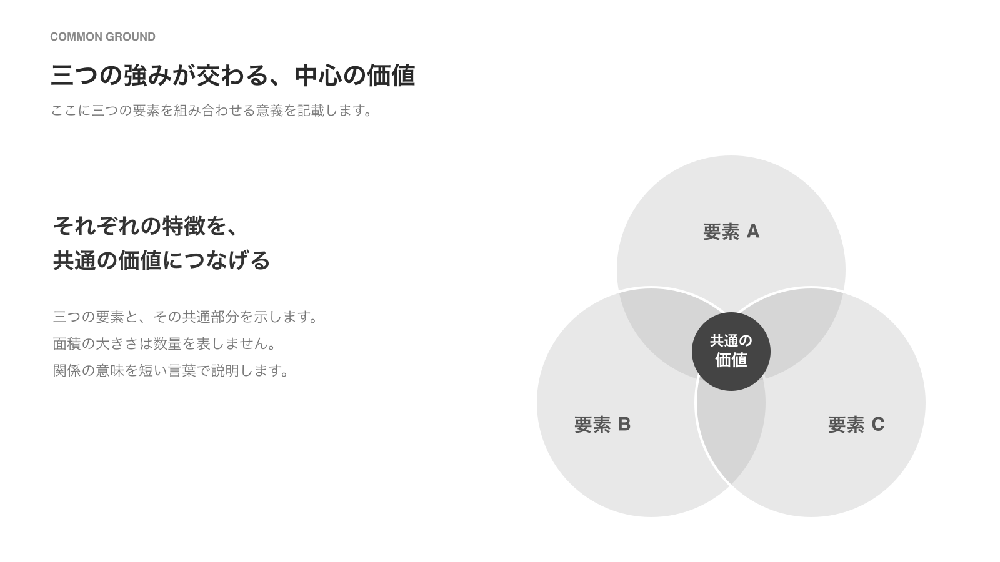三要素の重なりと中心価値重なり3要素 · sets三つの強みと共通する価値を示すSVGPNG使い方・採用理由要素数3は集合数。重なりの意味を確認し、円の面積を定量的な割合と解釈しない。色・書体は顧客キットに合わせ、ダミー文言を正式原稿に差し替える。 左の説明と右の図に役割が分かれ、中心へ視線を誘導できる。
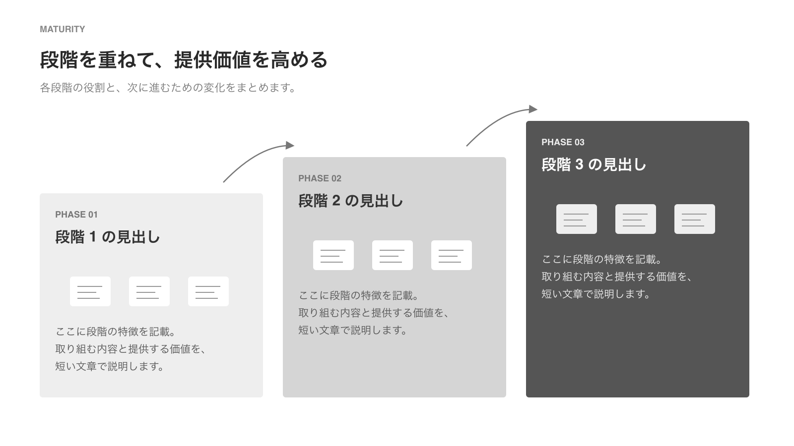三段階の成熟度成熟段階3要素 · stages三段階の変化を高さの異なるカードで説明するSVGPNG使い方・採用理由要素数3は段階数。カードの高さは金額・期間・達成率ではない。順序の根拠を原稿で確認する。色・書体は顧客キットに合わせ、ダミー文言を正式原稿に差し替える。 カードの底辺と内部の余白が揃い、高さで段階を表現できる。
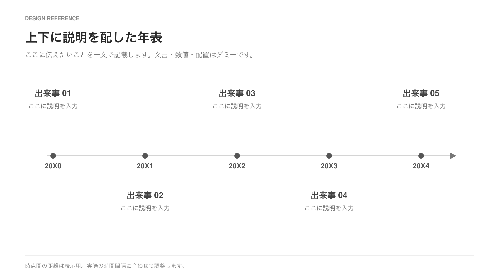上下に説明を配した年表時系列5要素 · milestones上下に説明を配した年表必要があるときSVGPNG使い方・採用理由要素数の単位はmilestones。図の関係と矢印の方向を原稿に合わせる。ブランドの色・書体・固定領域を優先し、ダミー文言を正式原稿へ差し替える。 関係を表す接続・整列・余白を優先し、白黒でも用途が読み取れる。既存とは要素の関係または配置が異なる。
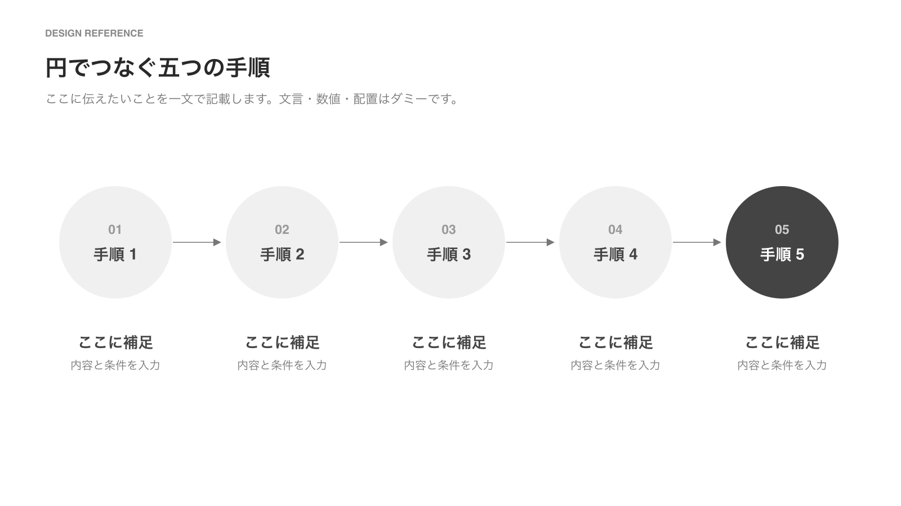円でつなぐ五つの手順手順・業務5要素 · steps円でつなぐ五つの手順必要があるときSVGPNG使い方・採用理由要素数の単位はsteps。図の関係と矢印の方向を原稿に合わせる。ブランドの色・書体・固定領域を優先し、ダミー文言を正式原稿へ差し替える。 関係を表す接続・整列・余白を優先し、白黒でも用途が読み取れる。既存とは要素の関係または配置が異なる。
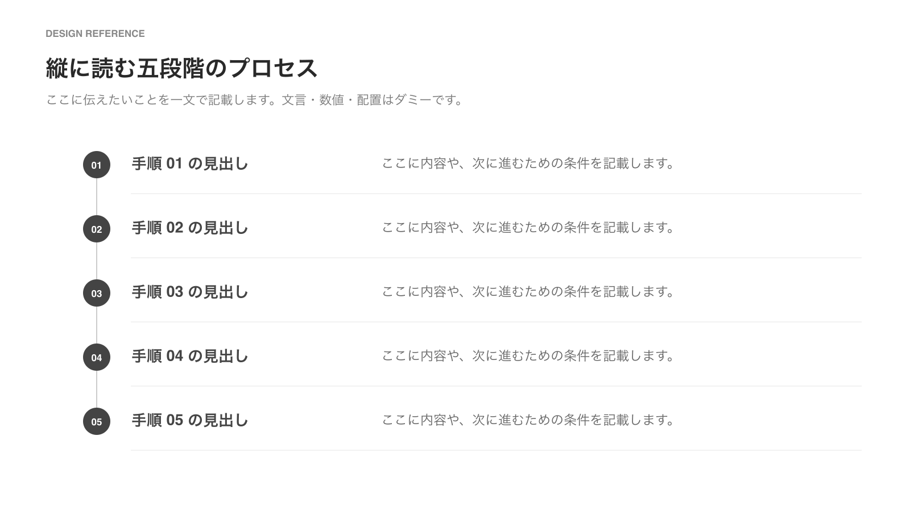縦に読む五段階のプロセス手順・業務5要素 · steps縦に読む五段階のプロセス必要があるときSVGPNG使い方・採用理由要素数の単位はsteps。図の関係と矢印の方向を原稿に合わせる。ブランドの色・書体・固定領域を優先し、ダミー文言を正式原稿へ差し替える。 関係を表す接続・整列・余白を優先し、白黒でも用途が読み取れる。既存とは要素の関係または配置が異なる。
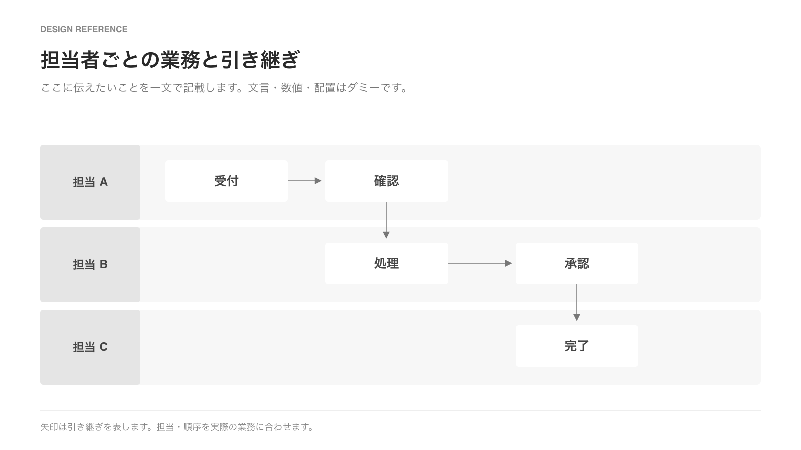担当者ごとの業務と引き継ぎ手順・業務3要素 · lanes担当者ごとの業務と引き継ぎ必要があるときSVGPNG使い方・採用理由要素数の単位はlanes。図の関係と矢印の方向を原稿に合わせる。ブランドの色・書体・固定領域を優先し、ダミー文言を正式原稿へ差し替える。 関係を表す接続・整列・余白を優先し、白黒でも用途が読み取れる。既存とは要素の関係または配置が異なる。
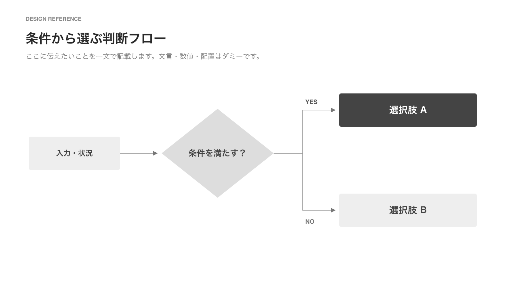条件から選ぶ判断フロー条件分岐2要素 · outcomes条件から選ぶ判断フロー必要があるときSVGPNG使い方・採用理由要素数の単位はoutcomes。図の関係と矢印の方向を原稿に合わせる。ブランドの色・書体・固定領域を優先し、ダミー文言を正式原稿へ差し替える。 関係を表す接続・整列・余白を優先し、白黒でも用途が読み取れる。既存とは要素の関係または配置が異なる。
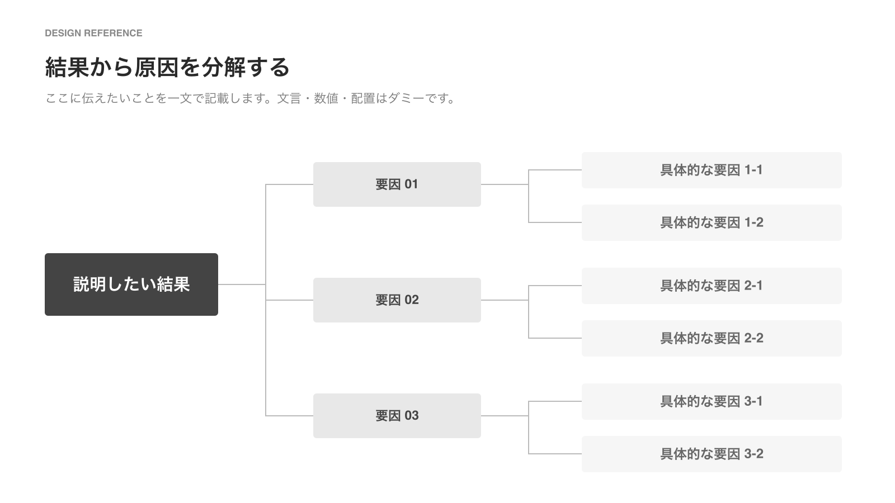結果から原因を分解する因果分解3要素 · branches結果から原因を分解する必要があるときSVGPNG使い方・採用理由要素数の単位はbranches。図の関係と矢印の方向を原稿に合わせる。ブランドの色・書体・固定領域を優先し、ダミー文言を正式原稿へ差し替える。 関係を表す接続・整列・余白を優先し、白黒でも用途が読み取れる。既存とは要素の関係または配置が異なる。
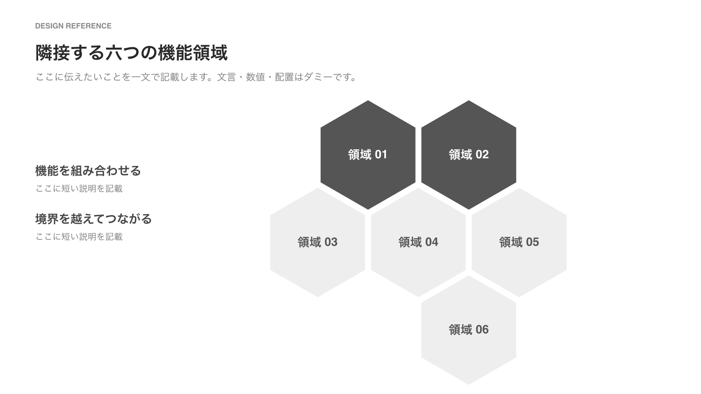隣接する六つの機能領域グループ6要素 · domains隣接する六つの機能領域必要があるときSVGPNG使い方・採用理由要素数の単位はdomains。図の関係と矢印の方向を原稿に合わせる。ブランドの色・書体・固定領域を優先し、ダミー文言を正式原稿へ差し替える。 関係を表す接続・整列・余白を優先し、白黒でも用途が読み取れる。既存とは要素の関係または配置が異なる。
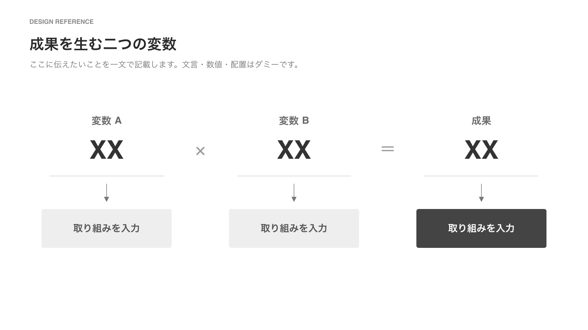成果を生む二つの変数数式2要素 · factors成果を生む二つの変数必要があるときSVGPNG使い方・採用理由要素数の単位はfactors。図の関係と矢印の方向を原稿に合わせる。ブランドの色・書体・固定領域を優先し、ダミー文言を正式原稿へ差し替える。 関係を表す接続・整列・余白を優先し、白黒でも用途が読み取れる。既存とは要素の関係または配置が異なる。
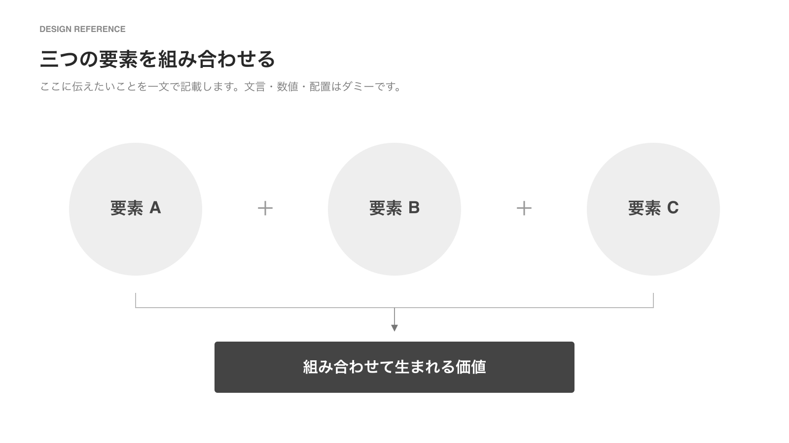三つの要素を組み合わせる数式3要素 · factors三つの要素を組み合わせる必要があるときSVGPNG使い方・採用理由要素数の単位はfactors。図の関係と矢印の方向を原稿に合わせる。ブランドの色・書体・固定領域を優先し、ダミー文言を正式原稿へ差し替える。 関係を表す接続・整列・余白を優先し、白黒でも用途が読み取れる。既存とは要素の関係または配置が異なる。
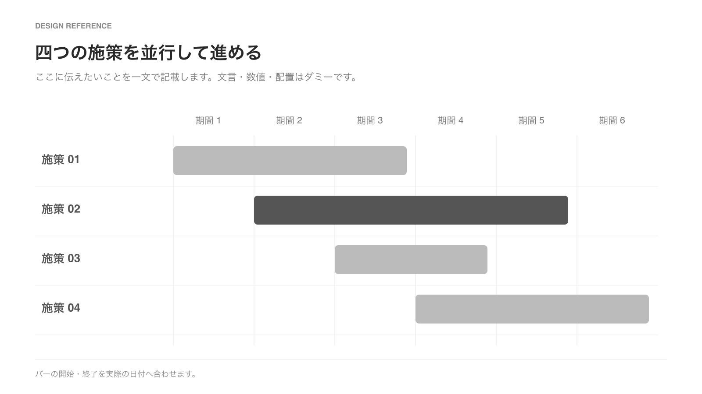四つの施策を並行して進めるスケジュール4要素 · workstreams四つの施策を並行して進める必要があるときSVGPNG使い方・採用理由要素数の単位はworkstreams。図の関係と矢印の方向を原稿に合わせる。ブランドの色・書体・固定領域を優先し、ダミー文言を正式原稿へ差し替える。 関係を表す接続・整列・余白を優先し、白黒でも用途が読み取れる。既存とは要素の関係または配置が異なる。
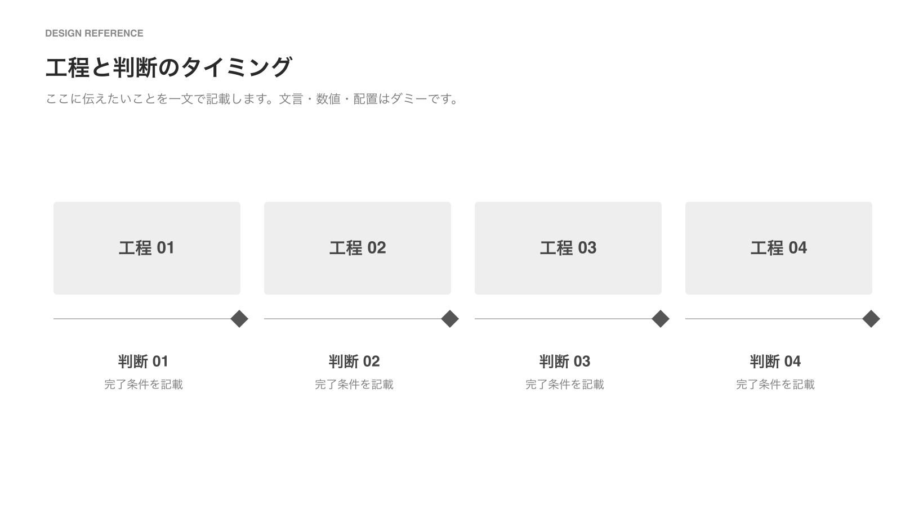工程と判断のタイミングスケジュール4要素 · phases工程と判断のタイミング必要があるときSVGPNG使い方・採用理由要素数の単位はphases。図の関係と矢印の方向を原稿に合わせる。ブランドの色・書体・固定領域を優先し、ダミー文言を正式原稿へ差し替える。 関係を表す接続・整列・余白を優先し、白黒でも用途が読み取れる。既存とは要素の関係または配置が異なる。
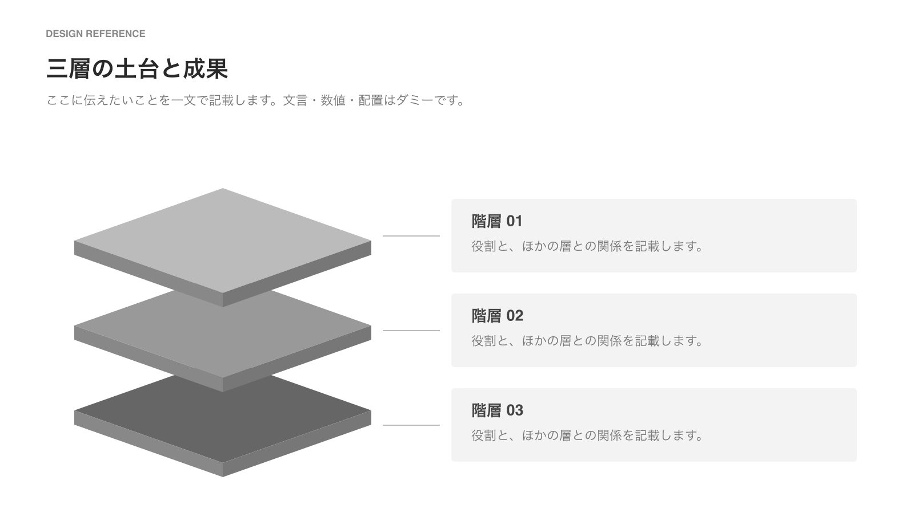三層の土台と成果レイヤー3要素 · layers三層の土台と成果必要があるときSVGPNG使い方・採用理由要素数の単位はlayers。図の関係と矢印の方向を原稿に合わせる。ブランドの色・書体・固定領域を優先し、ダミー文言を正式原稿へ差し替える。 関係を表す接続・整列・余白を優先し、白黒でも用途が読み取れる。既存とは要素の関係または配置が異なる。
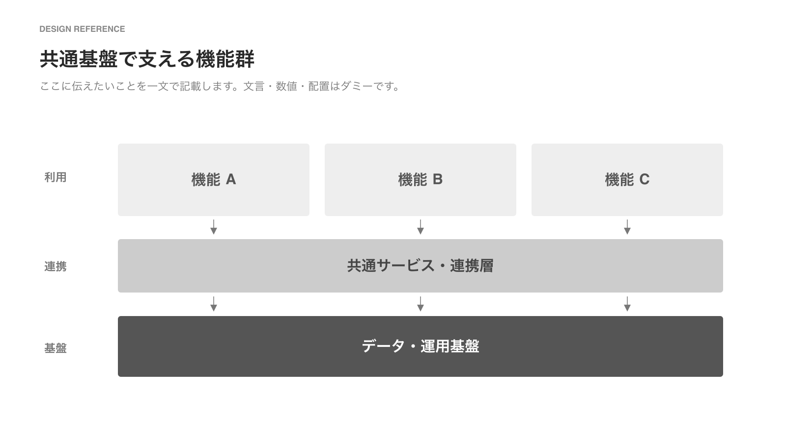共通基盤で支える機能群レイヤー3要素 · layers共通基盤で支える機能群必要があるときSVGPNG使い方・採用理由要素数の単位はlayers。図の関係と矢印の方向を原稿に合わせる。ブランドの色・書体・固定領域を優先し、ダミー文言を正式原稿へ差し替える。 関係を表す接続・整列・余白を優先し、白黒でも用途が読み取れる。既存とは要素の関係または配置が異なる。
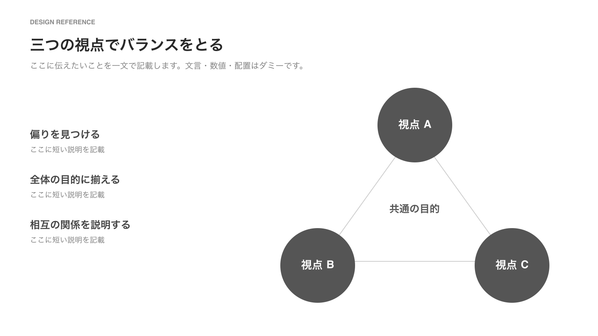三つの視点でバランスをとる関係3要素 · domains三つの視点でバランスをとる必要があるときSVGPNG使い方・採用理由要素数の単位はdomains。図の関係と矢印の方向を原稿に合わせる。ブランドの色・書体・固定領域を優先し、ダミー文言を正式原稿へ差し替える。 関係を表す接続・整列・余白を優先し、白黒でも用途が読み取れる。既存とは要素の関係または配置が異なる。
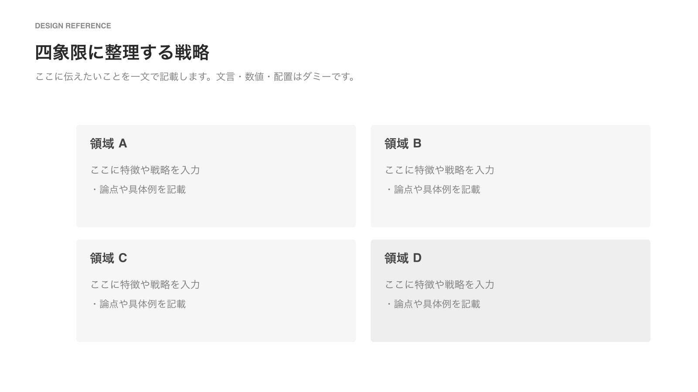四象限に整理する戦略マトリクス4要素 · quadrants四象限に整理する戦略必要があるときSVGPNG使い方・採用理由要素数の単位はquadrants。図の関係と矢印の方向を原稿に合わせる。数値・面積・長さ・座標・曲線はダミー。実データまたは調査結果から再計算する。ブランドの色・書体・固定領域を優先し、ダミー文言を正式原稿へ差し替える。 関係を表す接続・整列・余白を優先し、白黒でも用途が読み取れる。既存とは要素の関係または配置が異なる。
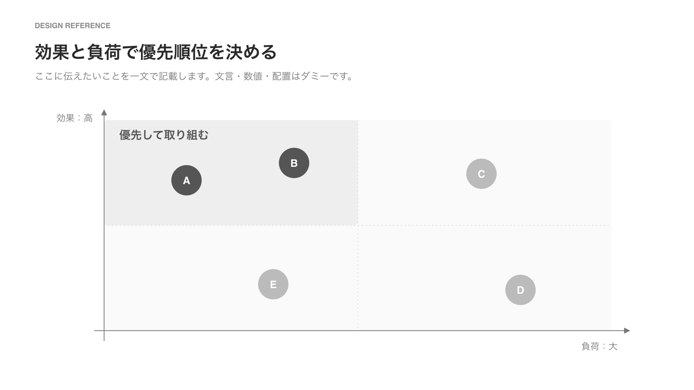効果と負荷で優先順位を決めるマトリクス2要素 · axes効果と負荷で優先順位を決める必要があるときSVGPNG使い方・採用理由要素数の単位はaxes。図の関係と矢印の方向を原稿に合わせる。数値・面積・長さ・座標・曲線はダミー。実データまたは調査結果から再計算する。ブランドの色・書体・固定領域を優先し、ダミー文言を正式原稿へ差し替える。 関係を表す接続・整列・余白を優先し、白黒でも用途が読み取れる。既存とは要素の関係または配置が異なる。
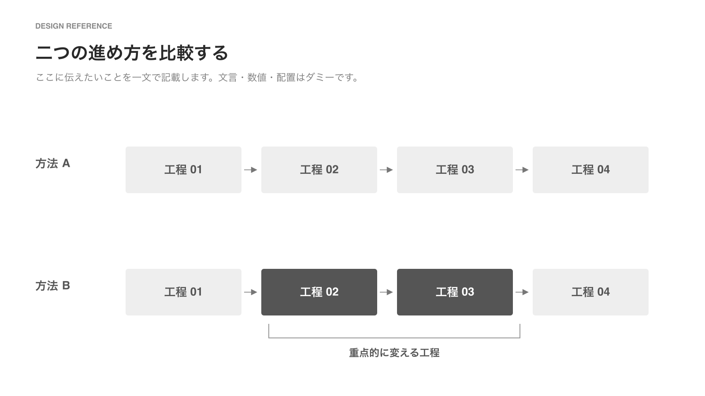二つの進め方を比較する比較2要素 · alternatives二つの進め方を比較する必要があるときSVGPNG使い方・採用理由要素数の単位はalternatives。図の関係と矢印の方向を原稿に合わせる。ブランドの色・書体・固定領域を優先し、ダミー文言を正式原稿へ差し替える。 関係を表す接続・整列・余白を優先し、白黒でも用途が読み取れる。既存とは要素の関係または配置が異なる。
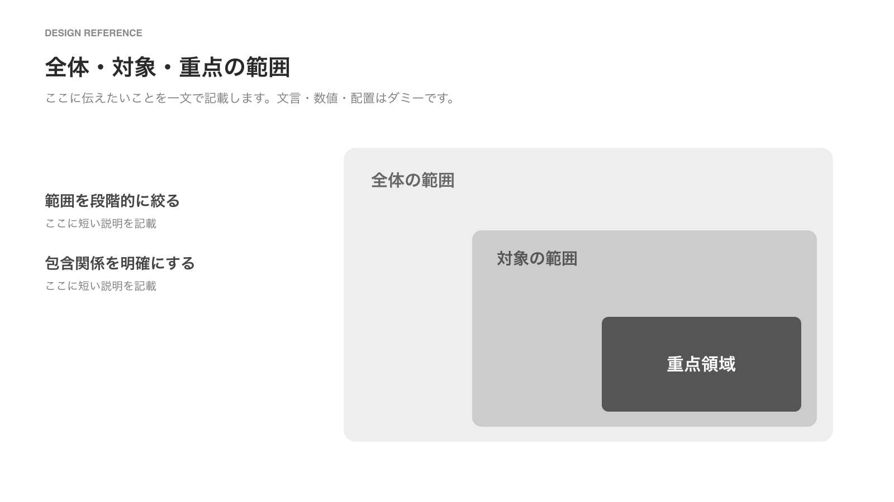全体・対象・重点の範囲包含・範囲3要素 · scopes全体・対象・重点の範囲必要があるときSVGPNG使い方・採用理由要素数の単位はscopes。図の関係と矢印の方向を原稿に合わせる。ブランドの色・書体・固定領域を優先し、ダミー文言を正式原稿へ差し替える。 関係を表す接続・整列・余白を優先し、白黒でも用途が読み取れる。既存とは要素の関係または配置が異なる。
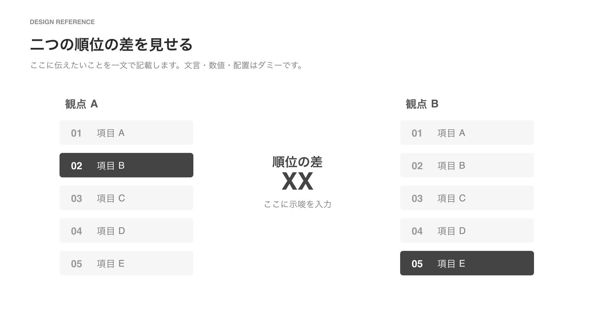二つの順位の差を見せるランキング2要素 · rankings二つの順位の差を見せる必要があるときSVGPNG使い方・採用理由要素数の単位はrankings。図の関係と矢印の方向を原稿に合わせる。数値・面積・長さ・座標・曲線はダミー。実データまたは調査結果から再計算する。ブランドの色・書体・固定領域を優先し、ダミー文言を正式原稿へ差し替える。 関係を表す接続・整列・余白を優先し、白黒でも用途が読み取れる。既存とは要素の関係または配置が異なる。
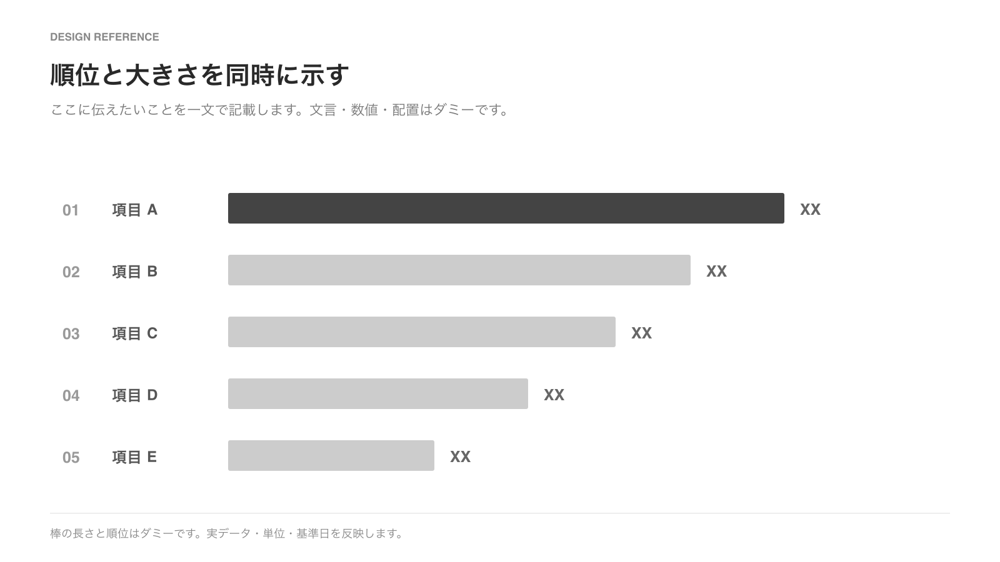順位と大きさを同時に示すランキング5要素 · items順位と大きさを同時に示す必要があるときSVGPNG使い方・採用理由要素数の単位はitems。図の関係と矢印の方向を原稿に合わせる。数値・面積・長さ・座標・曲線はダミー。実データまたは調査結果から再計算する。ブランドの色・書体・固定領域を優先し、ダミー文言を正式原稿へ差し替える。 関係を表す接続・整列・余白を優先し、白黒でも用途が読み取れる。既存とは要素の関係または配置が異なる。
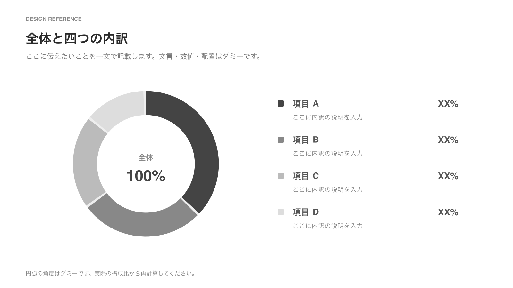全体と四つの内訳構成比4要素 · segments全体と四つの内訳必要があるときSVGPNG使い方・採用理由要素数の単位はsegments。図の関係と矢印の方向を原稿に合わせる。数値・面積・長さ・座標・曲線はダミー。実データまたは調査結果から再計算する。ブランドの色・書体・固定領域を優先し、ダミー文言を正式原稿へ差し替える。 関係を表す接続・整列・余白を優先し、白黒でも用途が読み取れる。既存とは要素の関係または配置が異なる。
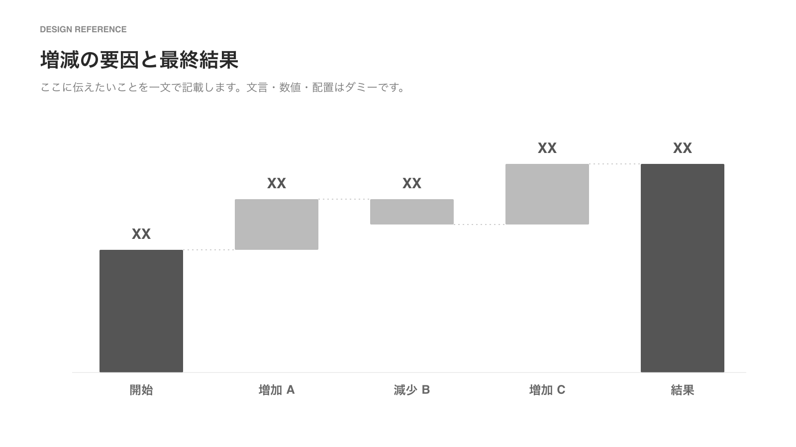増減の要因と最終結果増減5要素 · bars増減の要因と最終結果必要があるときSVGPNG使い方・採用理由要素数の単位はbars。図の関係と矢印の方向を原稿に合わせる。数値・面積・長さ・座標・曲線はダミー。実データまたは調査結果から再計算する。ブランドの色・書体・固定領域を優先し、ダミー文言を正式原稿へ差し替える。 関係を表す接続・整列・余白を優先し、白黒でも用途が読み取れる。既存とは要素の関係または配置が異なる。
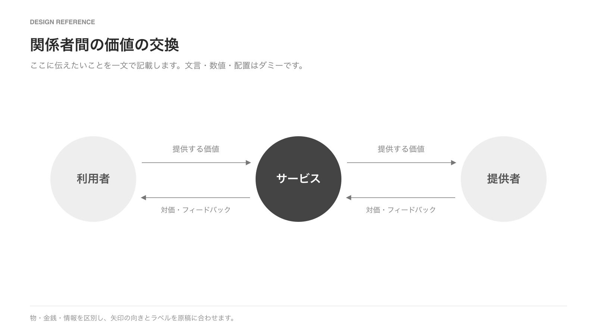関係者間の価値の交換関係3要素 · actors関係者間の価値の交換必要があるときSVGPNG使い方・採用理由要素数の単位はactors。図の関係と矢印の方向を原稿に合わせる。ブランドの色・書体・固定領域を優先し、ダミー文言を正式原稿へ差し替える。 関係を表す接続・整列・余白を優先し、白黒でも用途が読み取れる。既存とは要素の関係または配置が異なる。
体験の流れと改善ポイント体験の流れ5要素 · stages体験の流れと改善ポイント必要があるときSVGPNG使い方・採用理由要素数の単位はstages。図の関係と矢印の方向を原稿に合わせる。数値・面積・長さ・座標・曲線はダミー。実データまたは調査結果から再計算する。ブランドの色・書体・固定領域を優先し、ダミー文言を正式原稿へ差し替える。 関係を表す接続・整列・余白を優先し、白黒でも用途が読み取れる。既存とは要素の関係または配置が異なる。
専門性と領域の掛け合わせ数式2要素 · 専門性の群左右の項目群を中央の二つの強みに集約して掛け合わせる。SVGPNG使い方・採用理由要素数や文章量を変える場合は、間隔と文字サイズを再調整する。 左右の項目群を中央の二つの強みに集約して掛け合わせる。
白い交差部を持つ二円重なり2要素 · 評価軸二つの評価軸や相補的な価値を、明暗と白い交差部で示す。SVGPNG使い方・採用理由要素数や文章量を変える場合は、間隔と文字サイズを再調整する。 二つの評価軸や相補的な価値を、明暗と白い交差部で示す。
三つの円による掛け合わせ数式3要素 · 因子三つの独立要素を同じ重みで並べ、掛け合わせの構造を見せる。SVGPNG使い方・採用理由要素数や文章量を変える場合は、間隔と文字サイズを再調整する。 三つの独立要素を同じ重みで並べ、掛け合わせの構造を見せる。
共通基盤から広がる同心アーチ領域拡張6要素 · 周辺領域共通基盤と周辺の六領域を、下端から広がる同心円で示す。SVGPNG使い方・採用理由要素数や文章量を変える場合は、間隔と文字サイズを再調整する。 共通基盤と周辺の六領域を、下端から広がる同心円で示す。
五機能の軌道と右側解説関係5要素 · 周辺機能中心となる仕組み、五つの周辺機能、機能別の説明を一画面で示す。SVGPNG使い方・採用理由要素数や文章量を変える場合は、間隔と文字サイズを再調整する。 中心となる仕組み、五つの周辺機能、機能別の説明を一画面で示す。
大きな核と曲線状の事業一覧組織8要素 · 事業組織グループの核から複数の事業を並べ、一部の関連領域を右側に展開する。SVGPNG使い方・採用理由要素数や文章量を変える場合は、間隔と文字サイズを再調整する。 グループの核から複数の事業を並べ、一部の関連領域を右側に展開する。
カテゴリ別の可変幅タイルグループ7要素 · カテゴリカテゴリの項目数に合わせて幅を変え、道具や技術の一覧を整然と見せる。SVGPNG使い方・採用理由要素数や文章量を変える場合は、間隔と文字サイズを再調整する。 カテゴリの項目数に合わせて幅を変え、道具や技術の一覧を整然と見せる。
二領域とサービスの配置図構成比2要素 · 事業領域二つの事業領域の中で、工程ごとにサービスを配置する。SVGPNG使い方・採用理由要素数や文章量を変える場合は、間隔と文字サイズを再調整する。 二つの事業領域の中で、工程ごとにサービスを配置する。
四つの領域に広がるチーム群組織4要素 · 役割の群上下関係ではなく、役割のまとまりと共通の目的で組織を表現する。SVGPNG使い方・採用理由要素数や文章量を変える場合は、間隔と文字サイズを再調整する。 上下関係ではなく、役割のまとまりと共通の目的で組織を表現する。
二指標の削減比較比較2要素 · 比較指標時間と費用など二つの改善効果を、揃えた比較パネルで示す。SVGPNG使い方・採用理由数値はダミー。実データでは各パネルの棒の高さを同じ尺度で計算し直す。 時間と費用など二つの改善効果を、揃えた比較パネルで示す。
二市場の包含と現在地包含・範囲2要素 · 市場二つの対象について、全体・対象範囲・現在の規模を同じ構図で比較する。SVGPNG使い方・採用理由円は包含関係の模式図。面積比を表すものではない。 二つの対象について、全体・対象範囲・現在の規模を同じ構図で比較する。
市場へ広がる波紋と矢印領域拡張3要素 · 拡張段階現在の領域から外側の市場へ広がる意志を、包含円と放射方向で示す。SVGPNG使い方・採用理由円は模式図。市場規模の面積比とは分けて扱う。 現在の領域から外側の市場へ広がる意志を、包含円と放射方向で示す。
大きな数値と裁ち落とし市場図包含・範囲3要素 · 市場の階層大きな市場機会を余白と数値の強弱で印象づけ、現在地へ視線を導く。SVGPNG使い方・採用理由円は面積比を示さない。裁ち落としを使うため、固定ロゴやフッターの位置を確認する。 大きな市場機会を余白と数値の強弱で印象づけ、現在地へ視線を導く。
三つの観点と運用の解説関係3要素 · 評価の観点三つの観点を左にまとめ、判断基準と運用時期を右側で説明する。SVGPNG使い方・採用理由要素数や文章量を変える場合は、間隔と文字サイズを再調整する。 三つの観点を左にまとめ、判断基準と運用時期を右側で説明する。
可変幅の連続工程パネル手順・業務4要素 · 工程工程ごとの説明量に応じて幅を変え、最後の段階を濃色で示す。SVGPNG使い方・採用理由要素数や文章量を変える場合は、間隔と文字サイズを再調整する。 工程ごとの説明量に応じて幅を変え、最後の段階を濃色で示す。
縦書きの七段階プロセス手順・業務7要素 · 工程七つの短い工程名を縦書きで並べ、補足説明を下に揃える。SVGPNG使い方・採用理由縦書き見出しは短くする。点線の工程は任意・条件付きなどの意味を原稿で定義する。 七つの短い工程名を縦書きで並べ、補足説明を下に揃える。
スマホ画面を使う四段階ガイド手順・業務4要素 · 工程操作の流れを画面例と短い説明で示す。SVGPNG使い方・採用理由スマホ内はダミーの画面。実制作では実画面や必要な機能に置き換える。 操作の流れを画面例と短い説明で示す。
大きな番号と図を添えた工程手順・業務4要素 · 工程大きな段階番号、説明文、小さな図の三層で四段階を読み進める。SVGPNG使い方・採用理由要素数や文章量を変える場合は、間隔と文字サイズを再調整する。 大きな段階番号、説明文、小さな図の三層で四段階を読み進める。
フェーズと担当を揃える八工程手順・業務8要素 · 工程八工程を二つのフェーズに分け、各工程の担当を最下段に揃える。SVGPNG使い方・採用理由要素数や文章量を変える場合は、間隔と文字サイズを再調整する。 八工程を二つのフェーズに分け、各工程の担当を最下段に揃える。
五段階の矢羽と期間・補足手順・業務5要素 · 工程五段階の全体像を簡潔に示し、所要期間と補足を下に配置する。SVGPNG使い方・採用理由要素数や文章量を変える場合は、間隔と文字サイズを再調整する。 五段階の全体像を簡潔に示し、所要期間と補足を下に配置する。
顧客段階と支援範囲のマップ体験の流れ5要素 · 顧客段階五つの顧客段階に対し、複数の支援領域がどこをカバーするか示す。SVGPNG使い方・採用理由要素数や文章量を変える場合は、間隔と文字サイズを再調整する。 五つの顧客段階に対し、複数の支援領域がどこをカバーするか示す。
大型ロゴの透かし表紙表紙1要素 · 表紙背景の大型シンボルと広い余白でブランドの印象を残す。SVGPNG使い方・採用理由ダミーロゴ・文言・日付は正式な素材へ差し替える。色と書体は顧客キットに合わせ、背景と文字のコントラストを確認する。 背景の大型シンボルと広い余白でブランドの印象を残す。
巨大英字を背景にした表紙表紙1要素 · 表紙主題を伝える日本語の背後に、大型英字のリズムをつくる。SVGPNG使い方・採用理由ダミーロゴ・文言・日付は正式な素材へ差し替える。色と書体は顧客キットに合わせ、背景と文字のコントラストを確認する。 主題を伝える日本語の背後に、大型英字のリズムをつくる。
大きな英字と柔らかなグラデーション表紙1要素 · 表紙大きな英語見出しと明暗のゆるやかな変化で、奥行きをつくる。SVGPNG使い方・採用理由ダミーロゴ・文言・日付は正式な素材へ差し替える。色と書体は顧客キットに合わせ、背景と文字のコントラストを確認する。 大きな英語見出しと明暗のゆるやかな変化で、奥行きをつくる。
光と粒子のグラデーション表紙表紙1要素 · 表紙粒子の質感と細めの大きな文字で、静かな奥行きを見せる。SVGPNG使い方・採用理由ダミーロゴ・文言・日付は正式な素材へ差し替える。色と書体は顧客キットに合わせ、背景と文字のコントラストを確認する。 粒子の質感と細めの大きな文字で、静かな奥行きを見せる。
単色と余白のミニマル表紙表紙1要素 · 表紙単色の背景と少数の文字だけで、主題を大きく見せる。SVGPNG使い方・採用理由ダミーロゴ・文言・日付は正式な素材へ差し替える。色と書体は顧客キットに合わせ、背景と文字のコントラストを確認する。 単色の背景と少数の文字だけで、主題を大きく見せる。
背景キーワードの登壇表紙表紙1要素 · 表紙発表タイトルと登壇者情報を、背景の大きなキーワードで支える。SVGPNG使い方・採用理由ダミーロゴ・文言・日付は正式な素材へ差し替える。色と書体は顧客キットに合わせ、背景と文字のコントラストを確認する。 発表タイトルと登壇者情報を、背景の大きなキーワードで支える。
余白と登壇者情報の白い表紙表紙1要素 · 表紙白い余白を広く取り、タイトルと登壇者の情報を整理する。SVGPNG使い方・採用理由ダミーロゴ・文言・日付は正式な素材へ差し替える。色と書体は顧客キットに合わせ、背景と文字のコントラストを確認する。 白い余白を広く取り、タイトルと登壇者の情報を整理する。
写真背景と大きな英字の表紙表紙1要素 · 表紙写真が伝える空気感を生かし、明暗補正で大きなタイトルを読みやすくする。SVGPNG使い方・採用理由ダミーロゴ・文言・日付は正式な素材へ差し替える。色と書体は顧客キットに合わせ、背景と文字のコントラストを確認する。背景は生成した架空の写真。顧客の実際の施設・実績を表す素材として使わない。実制作では承認済み写真へ差し替える。 写真が伝える空気感を生かし、明暗補正で大きなタイトルを読みやすくする。
3名の横並びプロフィールメンバー紹介3要素 · 人物写真・専門領域・紹介文を3名並べ、少人数のチームを紹介する。SVGPNG使い方・採用理由人物・氏名・経歴は見本用。実制作では正式な写真と原稿に差し替える。人数や文章量を変える場合は、写真と文章の領域を再設計する。
6名のプロフィールカードメンバー紹介6要素 · 人物写真をカードの上へ重ね、6名の役職と短い紹介を一覧にする。SVGPNG使い方・採用理由人物・氏名・経歴は見本用。実制作では正式な写真と原稿に差し替える。人数や文章量を変える場合は、写真と文章の領域を再設計する。
4名の顔写真と略歴メンバー紹介4要素 · 人物丸い写真と長めの略歴を組み合わせ、4名の専門性を説明する。SVGPNG使い方・採用理由人物・氏名・経歴は見本用。実制作では正式な写真と原稿に差し替える。人数や文章量を変える場合は、写真と文章の領域を再設計する。
7名のポートレート一覧メンバー紹介7要素 · 人物顔写真・役職・入社年・得意領域を4名＋3名の配置で一覧にする。SVGPNG使い方・採用理由人物・氏名・経歴は見本用。実制作では正式な写真と原稿に差し替える。人数や文章量を変える場合は、写真と文章の領域を再設計する。